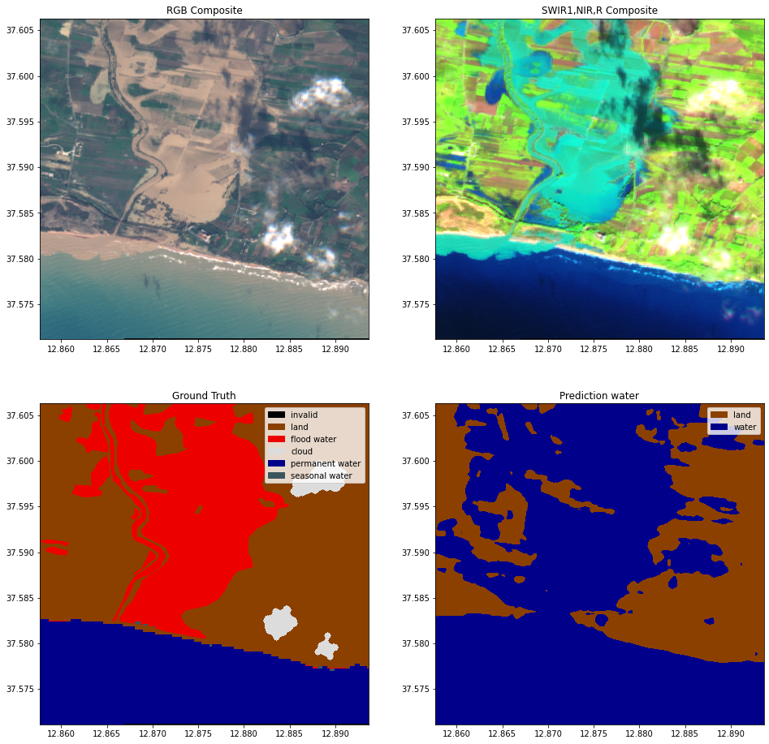
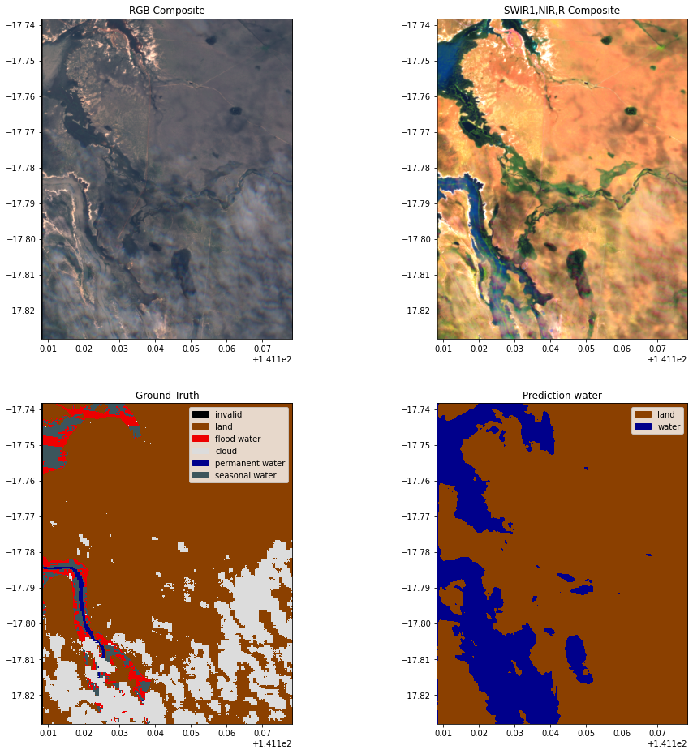
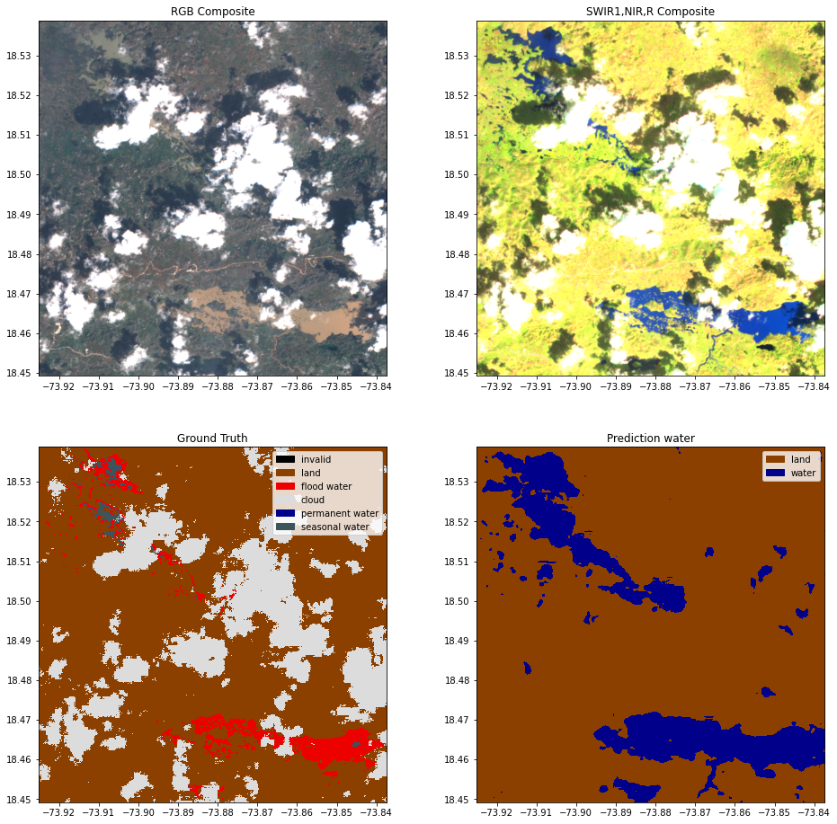
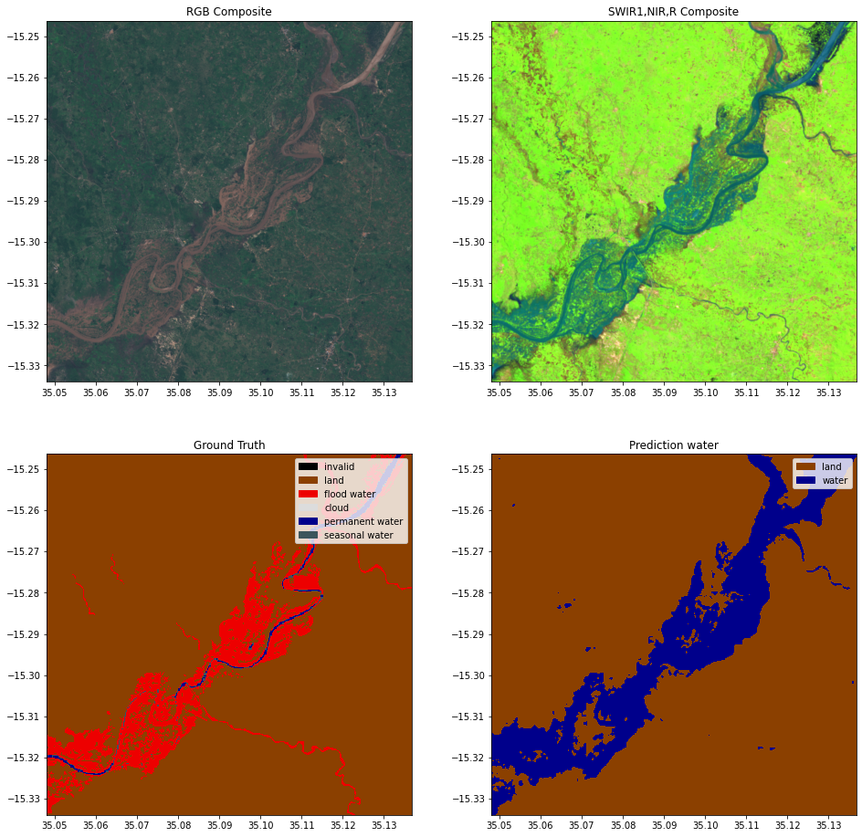
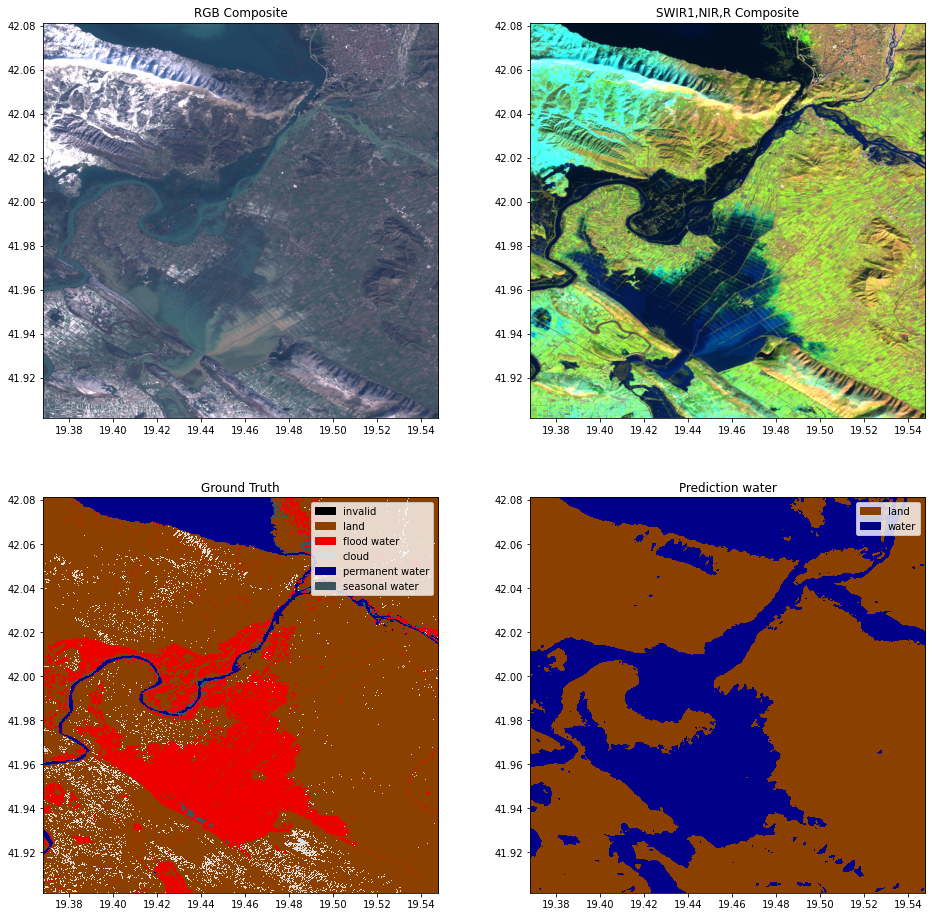

Cloud removal inference
Contents
Cloud removal inference¶
Last Modified: 09-04-2021
Authors: Gonzalo Mateo-García
Run inference dual headed multioutput binary classification model
This notebook shows how to load a trained model from a experiment config file. With that model we will then make predictions on new Sentinel-2 images. In this case we will use a model that produce an output image with two channels. The first channel encodes the probability of cloud and the second channel the probability of water. With this new model we are able to correctly classify land/water in partially cloud covered places and over thin and semi-transparent clouds.
import sys, os
from pathlib import Path
# %load_ext autoreload
# %autoreload 2
Step 1: Get config¶
from ml4floods.models.config_setup import get_default_config
# experiment_name = "WF2_unet50"
# checkpoint_name = "epoch=5-step=16433.ckpt"
experiment_name = "WF2_unet"
# checkpoint_name = "epoch=5-step=24215.ckpt"
config_fp = f"gs://ml4cc_data_lake/2_PROD/2_Mart/2_MLModelMart/{experiment_name}/config.json"
config = get_default_config(config_fp)
# The max_tile_size param controls the max size of patches that are fed to the NN. If you're in a memory contrained environment set this value to 128
config["model_params"]["max_tile_size"] = 128
Loaded Config for experiment: WF2_unet
{ 'data_params': { 'batch_size': 32,
'bucket_id': 'ml4cc_data_lake',
'channel_configuration': 'all',
'filter_windows': True,
'filter_windows_version': 'v2',
'input_folder': 'S2',
'loader_type': 'local',
'num_workers': 4,
'path_to_splits': '/worldfloods/v2',
'target_folder': 'gt',
'train_test_split_file': '0_DEV/2_Mart/worldfloods_v2_0/train_test_split.json',
'window_size': [256, 256]},
'deploy': False,
'experiment_name': 'WF2_unet',
'gpus': '0',
'model_params': { 'hyperparameters': { 'channel_configuration': 'all',
'label_names': [ [ 'invalid',
'clear',
'cloud'],
[ 'invalid',
'land',
'water']],
'lr': 0.0001,
'lr_decay': 0.5,
'lr_patience': 2,
'max_epochs': 40,
'max_tile_size': 256,
'metric_monitor': 'val_bce_land_water',
'model_type': 'unet',
'num_channels': 13,
'num_classes': 2,
'pos_weight': [1.0, 20.0],
'val_every': 1,
'weight_problem': [0.2, 0.8]},
'model_folder': 'gs://ml4cc_data_lake/0_DEV/2_Mart/2_MLModelMart',
'model_version': 'v2',
'test': False,
'train': True},
'resume_from_checkpoint': False,
'seed': 12,
'test': False,
'train': False,
'wandb_entity': 'ml4floods',
'wandb_project': 'worldfloodsv2'}
Step 2: Load pre-trained model¶
from ml4floods.models.worldfloods_model import ML4FloodsModel
from ml4floods.models.model_setup import get_model
config["model_params"]['model_folder'] = 'gs://ml4cc_data_lake/2_PROD/2_Mart/2_MLModelMart'
config["model_params"]['test'] = True
model = get_model(config.model_params, experiment_name)
model.eval()
model.to("cuda:0")
Loaded model weights: gs://ml4cc_data_lake/2_PROD/2_Mart/2_MLModelMart/WF2_unet/model.pt
ML4FloodsModel(
(network): UNet(
(dconv_down1): Sequential(
(0): Conv2d(13, 64, kernel_size=(3, 3), stride=(1, 1), padding=(1, 1))
(1): ReLU(inplace=True)
(2): Conv2d(64, 64, kernel_size=(3, 3), stride=(1, 1), padding=(1, 1))
(3): ReLU(inplace=True)
)
(dconv_down2): Sequential(
(0): Conv2d(64, 128, kernel_size=(3, 3), stride=(1, 1), padding=(1, 1))
(1): ReLU(inplace=True)
(2): Conv2d(128, 128, kernel_size=(3, 3), stride=(1, 1), padding=(1, 1))
(3): ReLU(inplace=True)
)
(dconv_down3): Sequential(
(0): Conv2d(128, 256, kernel_size=(3, 3), stride=(1, 1), padding=(1, 1))
(1): ReLU(inplace=True)
(2): Conv2d(256, 256, kernel_size=(3, 3), stride=(1, 1), padding=(1, 1))
(3): ReLU(inplace=True)
)
(dconv_down4): Sequential(
(0): Conv2d(256, 512, kernel_size=(3, 3), stride=(1, 1), padding=(1, 1))
(1): ReLU(inplace=True)
(2): Conv2d(512, 512, kernel_size=(3, 3), stride=(1, 1), padding=(1, 1))
(3): ReLU(inplace=True)
)
(maxpool): MaxPool2d(kernel_size=2, stride=2, padding=0, dilation=1, ceil_mode=False)
(dconv_up3): Sequential(
(0): Conv2d(768, 256, kernel_size=(3, 3), stride=(1, 1), padding=(1, 1))
(1): ReLU(inplace=True)
(2): Conv2d(256, 256, kernel_size=(3, 3), stride=(1, 1), padding=(1, 1))
(3): ReLU(inplace=True)
)
(dconv_up2): Sequential(
(0): Conv2d(384, 128, kernel_size=(3, 3), stride=(1, 1), padding=(1, 1))
(1): ReLU(inplace=True)
(2): Conv2d(128, 128, kernel_size=(3, 3), stride=(1, 1), padding=(1, 1))
(3): ReLU(inplace=True)
)
(dconv_up1): Sequential(
(0): Conv2d(192, 64, kernel_size=(3, 3), stride=(1, 1), padding=(1, 1))
(1): ReLU(inplace=True)
(2): Conv2d(64, 64, kernel_size=(3, 3), stride=(1, 1), padding=(1, 1))
(3): ReLU(inplace=True)
)
(conv_last): Conv2d(64, 2, kernel_size=(1, 1), stride=(1, 1))
)
)
from ml4floods.models.model_setup import get_model_inference_function
inference_function = get_model_inference_function(model, config,apply_normalization=True,activation="sigmoid")
Getting model inference function
Max tile size: 128
Step 3: Helper functions for plotting and reading some demo data¶
import rasterio
import numpy as np
from rasterio import plot as rasterioplt
import matplotlib.pyplot as plt
from matplotlib import colors
import matplotlib.patches as mpatches
from typing import Optional, Tuple, Union
import torch
from ml4floods.data.worldfloods.configs import BANDS_S2
from ml4floods.visualization.plot_utils import download_tiff
@torch.no_grad()
def read_inference_pair(tiff_inputs:str, folder_ground_truth:str,
window:Optional[Union[rasterio.windows.Window, Tuple[slice,slice]]],
return_ground_truth: bool=False, channels:bool=None,
folder_permanent_water=Optional[str],
cache_folder=None) -> Tuple[torch.Tensor, torch.Tensor, torch.Tensor, rasterio.Affine]:
"""
Read a pair of layers from the worldfloods bucket and return them as Tensors to pass to a model, return the transform for plotting with lat/long
Args:
tiff_inputs: filename for layer in worldfloods bucket
folder_ground_truth: folder name to be replaced by S2 in the input
window: window of layer to use
return_ground_truth: flag to indicate if paired gt layer should be returned
channels: list of channels to read from the image
return_permanent_water: Read permanent water layer raster
Returns:
(torch_inputs, torch_targets, transform): inputs Tensor, gt Tensor, transform for plotting with lat/long
"""
if cache_folder is not None and tiff_inputs.startswith("gs"):
tiff_inputs = download_tiff(cache_folder, tiff_inputs, folder_ground_truth, folder_permanent_water)
tiff_targets = tiff_inputs.replace("/S2/", folder_ground_truth)
with rasterio.open(tiff_inputs, "r") as rst:
inputs = rst.read((np.array(channels) + 1).tolist(), window=window)
# Shifted transform based on the given window (used for plotting)
transform = rst.transform if window is None else rasterio.windows.transform(window, rst.transform)
torch_inputs = torch.Tensor(inputs.astype(np.float32)).unsqueeze(0)
if folder_permanent_water is not None:
tiff_permanent_water = tiff_inputs.replace("/S2/", folder_permanent_water)
with rasterio.open(tiff_permanent_water, "r") as rst:
permanent_water = rst.read(1, window=window)
torch_permanent_water = torch.tensor(permanent_water)
else:
torch_permanent_water = torch.zeros_like(torch_inputs)
if return_ground_truth:
with rasterio.open(tiff_targets, "r") as rst:
targets = rst.read(1, window=window)
torch_targets = torch.tensor(targets).unsqueeze(0)
else:
torch_targets = torch.zeros_like(torch_inputs)
return torch_inputs, torch_targets, torch_permanent_water, transform
COLORS_WORLDFLOODS = np.array([[0, 0, 0], # invalid
[139, 64, 0], # land
[0, 0, 139], # water
[220, 220, 220]], # cloud
dtype=np.float32) / 255
INTERPRETATION_WORLDFLOODS = ["invalid", "land", "water", "cloud"]
COLORS_WORLDFLOODS_PERMANENT = np.array([[0, 0, 0], # 0: invalid
[139, 64, 0], # 1: land
[237, 0, 0], # 2: flood_water
[220, 220, 220], # 3: cloud
[0, 0, 139], # 4: permanent_water
[60, 85, 92]], # 5: seasonal_water
dtype=np.float32) / 255
INTERPRETATION_WORLDFLOODS_PERMANENT = ["invalid", "land", "flood water", "cloud", "permanent water", "seasonal water"]
def gt_with_permanent_water(gt: np.ndarray, permanent_water: np.ndarray)->np.ndarray:
""" Permanent water taken from: https://developers.google.com/earth-engine/datasets/catalog/JRC_GSW1_2_YearlyHistory"""
gt[(gt == 2) & (permanent_water == 3)] = 4 # set as permanent_water
gt[(gt == 2) & (permanent_water == 2)] = 5 # set as seasonal water
return gt
def get_cmap_norm_colors(color_array, interpretation_array):
cmap_categorical = colors.ListedColormap(color_array)
norm_categorical = colors.Normalize(vmin=-.5,
vmax=color_array.shape[0]-.5)
patches = []
for c, interp in zip(color_array, interpretation_array):
patches.append(mpatches.Patch(color=c, label=interp))
return cmap_categorical, norm_categorical, patches
def plot_inference_set(inputs: torch.Tensor, targets: torch.Tensor,
predictions: torch.Tensor, permanent_water: torch.Tensor, transform: rasterio.Affine)->None:
"""
Plots inputs, targets and prediction into lat/long visualisation
Args:
inputs: input Tensor
targets: gt target Tensor
prediction: predictions output by model (softmax, argmax already applied)
permanent_water: permanent water raster
transform: transform used to plot with lat/long
"""
fig, ax = plt.subplots(2,2,figsize=(16,16))
inputs_show = inputs.cpu().numpy().squeeze()
targets_show = targets.cpu().numpy().squeeze()
permanent_water_show = permanent_water.numpy().squeeze()
targets_show = gt_with_permanent_water(targets_show, permanent_water_show)
# Color categories {-1: invalid, 0: land, 1: water, 2: clouds}
cmap_preds, norm_preds, patches_preds = get_cmap_norm_colors(COLORS_WORLDFLOODS[1:3], INTERPRETATION_WORLDFLOODS[1:3])
cmap_gt, norm_gt, patches_gt = get_cmap_norm_colors(COLORS_WORLDFLOODS_PERMANENT, INTERPRETATION_WORLDFLOODS_PERMANENT)
prediction_show = (predictions).cpu().numpy().astype(float)
rgb = np.clip(inputs_show[[3,2,1], :, :]/3000.,0,1)
bands_false_composite = [BANDS_S2.index(b) for b in ["B11", "B8", "B4"]] # swir_1, nir, red composite
false_rgb = np.clip(inputs_show[bands_false_composite, :, :]/3000.,0,1)
rasterioplt.show(rgb,transform=transform,ax=ax[0,0])
ax[0,0].set_title("RGB Composite")
rasterioplt.show(false_rgb,transform=transform,ax=ax[0,1])
ax[0,1].set_title("SWIR1,NIR,R Composite")
rasterioplt.show(targets_show,transform=transform,ax=ax[1,0], cmap=cmap_gt, norm=norm_gt,
interpolation='nearest')
rasterioplt.show(prediction_show[0,1]>.5, transform=transform, ax=ax[1,1],cmap=cmap_preds, norm=norm_preds,
interpolation='nearest')
ax[1,0].set_title("Ground Truth")
ax[1,0].legend(handles=patches_gt,
loc='upper right')
ax[1,1].set_title("Prediction water")
ax[1,1].legend(handles=patches_preds,
loc='upper right')
Perform Inference using the inference_function¶
from ml4floods.models.model_setup import get_channel_configuration_bands
download_image = True
cache_folder = "tiffs_for_inference"
os.makedirs(cache_folder, exist_ok=True)
tiff_s2, window, channels = "gs://ml4floods/worldfloods/public/test/S2/EMSR333_02PORTOPALO_DEL_MONIT01_v1_observed_event_a.tif", (slice(1000,None),slice(0,400)), get_channel_configuration_bands(config.model_params.hyperparameters.channel_configuration)
# Load the image and ground truth
torch_inputs, torch_targets, torch_permanent_water, transform = read_inference_pair(tiff_s2,folder_ground_truth="/gt/",
window=window, return_ground_truth=True, channels=channels,
folder_permanent_water="/PERMANENTWATERJRC/",
cache_folder=cache_folder)
# Compute the prediction
outputs = inference_function(torch_inputs) # (batch_size, num_classes, h, w)
plot_inference_set(torch_inputs, torch_targets, outputs, torch_permanent_water, transform)

Lets try another image!¶
import rasterio.windows
window = rasterio.windows.Window(col_off=4_860, row_off=3_300,
width=840, height=1000)
tiff_s2, channels = "gs://ml4cc_data_lake/2_PROD/2_Mart/worldfloods_v1_0/test/S2/EMSR342_06NORTHNORMANTON_DEL_v1_observed_event_a.tif", get_channel_configuration_bands(config.model_params.hyperparameters.channel_configuration)
torch_inputs, torch_targets, torch_permanent_water, transform = read_inference_pair(tiff_s2, folder_ground_truth="/gt/",
window=window,
return_ground_truth=True, channels=channels,
folder_permanent_water="/PERMANENTWATERJRC/",
cache_folder=cache_folder)
outputs = inference_function(torch_inputs) # (batch_size, num_classes, h, w)
plot_inference_set(torch_inputs, torch_targets, outputs, torch_permanent_water, transform)

Lets try another image!¶
import rasterio.windows
window = rasterio.windows.Window(col_off=1_600, row_off=400,
width=1000, height=1000)
tiff_s2, channels = "gs://ml4cc_data_lake/2_PROD/2_Mart/worldfloods_v1_0/val/S2/EMSR271_02FARKADONA_DEL_v1_observed_event_a.tif", get_channel_configuration_bands(config.model_params.hyperparameters.channel_configuration)
torch_inputs, torch_targets, torch_permanent_water, transform = read_inference_pair(tiff_s2, folder_ground_truth="/gt/",
window=window,
return_ground_truth=True, channels=channels,
folder_permanent_water="/PERMANENTWATERJRC/",
cache_folder=cache_folder)
outputs = inference_function(torch_inputs) # (batch_size, num_classes, h, w)
plot_inference_set(torch_inputs, torch_targets, outputs, torch_permanent_water, transform)
Downloaded file tiffs_for_inference/S2/EMSR271_02FARKADONA_DEL_v1_observed_event_a.tif
Downloaded file tiffs_for_inference/gt/EMSR271_02FARKADONA_DEL_v1_observed_event_a.tif
Downloaded file tiffs_for_inference/PERMANENTWATERJRC/EMSR271_02FARKADONA_DEL_v1_observed_event_a.tif
Lets try another image!¶
# import rasterio.windows
window = None
tiff_s2, channels = "gs://ml4cc_data_lake/2_PROD/2_Mart/worldfloods_v1_0/S2/RS2_20161008_Water_Extent_Corail_Pestel.tif", get_channel_configuration_bands(config.model_params.hyperparameters.channel_configuration)
torch_inputs, torch_targets, torch_permanent_water, transform = read_inference_pair(tiff_s2, folder_ground_truth="/gt/",
window=window,
return_ground_truth=True, channels=channels,
folder_permanent_water="/PERMANENTWATERJRC/",
cache_folder=cache_folder)
outputs = inference_function(torch_inputs) # (batch_size, num_classes, h, w)
plot_inference_set(torch_inputs, torch_targets, outputs, torch_permanent_water, transform)

Lets try another image!¶
import rasterio.windows
window = rasterio.windows.Window(col_off=0, row_off=1_200,
width=1000, height=1_500)
tiff_s2, channels = "gs://ml4cc_data_lake/2_PROD/2_Mart/worldfloods_v1_0/val/S2/ST1_20161014_WaterExtent_BinhDinh_Lake.tif", get_channel_configuration_bands(config.model_params.hyperparameters.channel_configuration)
torch_inputs, torch_targets, torch_permanent_water, transform = read_inference_pair(tiff_s2, folder_ground_truth="/gt/",
window=window,
return_ground_truth=True, channels=channels,
folder_permanent_water="/PERMANENTWATERJRC/",
cache_folder=cache_folder)
outputs = inference_function(torch_inputs) # (batch_size, num_classes, h, w)
plot_inference_set(torch_inputs, torch_targets, outputs, torch_permanent_water, transform)
Downloaded file tiffs_for_inference/S2/ST1_20161014_WaterExtent_BinhDinh_Lake.tif
Downloaded file tiffs_for_inference/gt/ST1_20161014_WaterExtent_BinhDinh_Lake.tif
Downloaded file tiffs_for_inference/PERMANENTWATERJRC/ST1_20161014_WaterExtent_BinhDinh_Lake.tif
Lets try another image!¶
import rasterio.windows
window = rasterio.windows.Window(col_off=0, row_off=0,
width=1_500, height=1_500)
tiff_s2, channels = "gs://ml4cc_data_lake/2_PROD/2_Mart/worldfloods_v1_0/test/S2/EMSR347_07ZOMBA_DEL_MONIT01_v1_observed_event_a.tif", get_channel_configuration_bands(config.model_params.hyperparameters.channel_configuration)
torch_inputs, torch_targets, torch_permanent_water, transform = read_inference_pair(tiff_s2, folder_ground_truth="/gt/",
window=window,
return_ground_truth=True, channels=channels,
folder_permanent_water="/PERMANENTWATERJRC/",
cache_folder=cache_folder)
outputs = inference_function(torch_inputs) # (batch_size, num_classes, h, w)
plot_inference_set(torch_inputs, torch_targets, outputs, torch_permanent_water, transform)
Downloaded file tiffs_for_inference/S2/EMSR347_07ZOMBA_DEL_MONIT01_v1_observed_event_a.tif
Downloaded file tiffs_for_inference/gt/EMSR347_07ZOMBA_DEL_MONIT01_v1_observed_event_a.tif
Downloaded file tiffs_for_inference/PERMANENTWATERJRC/EMSR347_07ZOMBA_DEL_MONIT01_v1_observed_event_a.tif
Lets try another image!¶
tiff_s2, window, channels = "gs://ml4floods/worldfloods/public/test/S2/EMSR347_07ZOMBA_DEL_v2_observed_event_a.tif", None, get_channel_configuration_bands(config.model_params.hyperparameters.channel_configuration)
torch_inputs, torch_targets, torch_permanent_water, transform = read_inference_pair(tiff_s2, folder_ground_truth="/gt/",
window=window,
return_ground_truth=True, channels=channels,
folder_permanent_water="/PERMANENTWATERJRC/",
cache_folder=cache_folder)
outputs = inference_function(torch_inputs) # (batch_size, num_classes, h, w)
plot_inference_set(torch_inputs, torch_targets, outputs, torch_permanent_water, transform)

Lets try another image from the new data prepared by the Janitors!¶
import rasterio.windows
window = rasterio.windows.Window(col_off=1543, row_off=247,
width=2000, height=2000)
tiff_s2, channels = "gs://ml4cc_data_lake/2_PROD/1_Staging/WorldFloods/S2/EMSR501/AOI01/EMSR501_AOI01_DEL_MONIT01_r1_v1.tif", get_channel_configuration_bands(config.model_params.hyperparameters.channel_configuration)
torch_inputs, torch_targets, torch_permanent_water, transform = read_inference_pair(tiff_s2, folder_ground_truth="/GT/V_1_1/",
window=window,
return_ground_truth=True, channels=channels,
folder_permanent_water="/JRC/",
cache_folder=cache_folder)
outputs = inference_function(torch_inputs) # (batch_size, num_classes, h, w)
plot_inference_set(torch_inputs, torch_targets, outputs, torch_permanent_water, transform)
